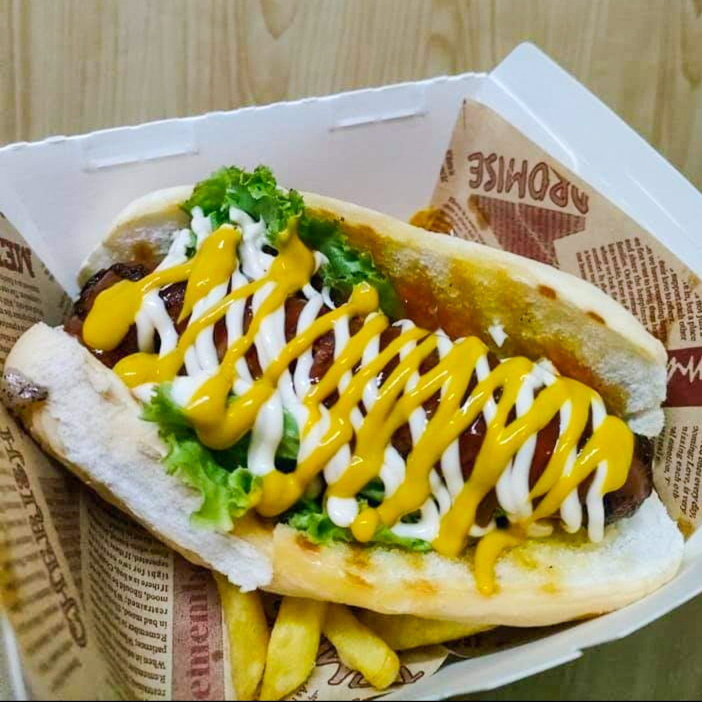

Hungarian Sausage Sandwich

Description
A flavorful sandwich with spicy Hungarian sausage and fresh toppings in a crispy roll.
Ingredients:
- 1 Hungarian sausage
- 1 fresh baguette or crusty roll
- 1 tbsp butter or mustard (optional)
- 1 small onion, thinly sliced
- 1 tomato, sliced
- 2-3 slices of pickles
- Fresh lettuce or arugula
- Paprika (optional for extra flavor)
Steps
- Slice the baguette or roll in half and lightly toast if desired.
- Spread butter or mustard on one side of the bread
- Heat the sausage slices in a pan until slightly cripsy (optional)
- Layer the sausage, onion, tomato, pickles and lettuce inside the bread.
- Sprinkle a bit of paprika for extra flavor.
- Close the sandwich, slice in half, and enjoy!
Home